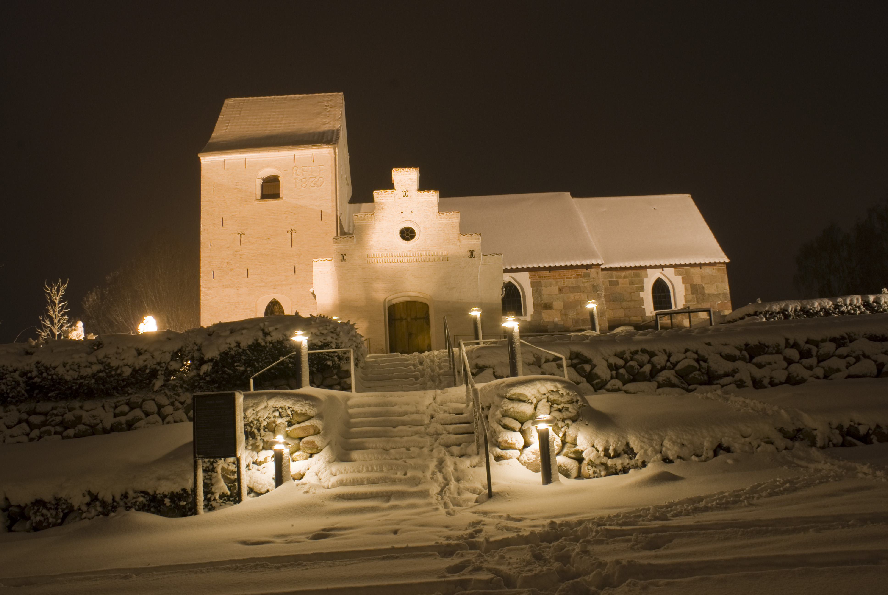
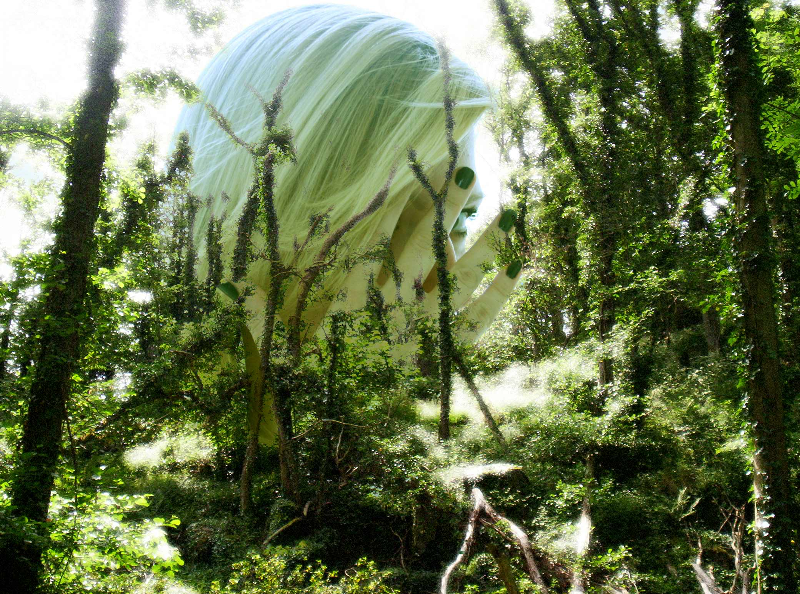

Trommer og co-production
Her er en live optagelser og demo med Servus fra 2011. I Servus fandt vi kendte sange med et dystert budskab såsom længsel, sorg og angst. Vi tog riffs fra hård rock og heavy, med en tydelig inspiration fra goth musikgenren repræsenteret primært af Within Temptation og Nightwish. Vi tog også riffs fra Rammstein og Bullet for My Valentine. Vi skabte musikken i fællesskab. Jeg elskede det band. Måske vil skæbnen genskabe det.
Musikproduktion
Musikken her er et resultat af talrige aftenener og nætter hvor jeg i ensomhed har skabt det ene jam-nummer efter det andet. Jeg har været igennem Pro Tools, Cubase, Ableton og Magix Music Maker. Inden da var det Dance E-Jay, men det tæller vel ikke? Håber du kan nyde musikken. Jeg forsvandt fra denne verden med hovedtelefoner på, og vendte først tilbage dagen efter.
Fotos


